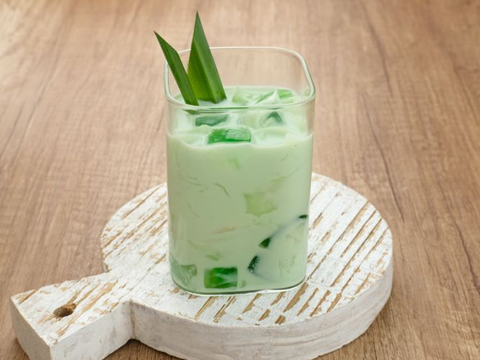

Ingredients
- 2 cups young coconut meat (buko), shredded
- 1 packet (90g) pandan-flavored gelatin (gulaman)
- 1 cup coconut juice or water
- 1 cup condensed milk
- 1 cup all-purpose cream
- 1/2 cup nata de coco (optional)
- 1/2 cup small sago pearls, cooked (optional)
- 1/4 cup sugar (adjust to taste)
- Pandan leaves (optional, for extra flavor)
Instructions
- Prepare the Pandan Gelatin: Dissolve the gelatin in coconut juice or water according to the package instructions. Bring to a boil while stirring, then pour into a flat container and let it set in the refrigerator until firm. Once set, cut the gelatin into small cubes.
- Prepare the Sago Pearls (if using): Boil the small sago pearls until translucent. Drain and rinse under cold water. Set aside.
- Mix the Ingredients: In a large mixing bowl, combine the shredded young coconut meat, pandan gelatin cubes, nata de coco (if using), and cooked sago pearls (if using). Add the condensed milk and all-purpose cream. Mix well until evenly coated.
- Adjust the sweetness by adding sugar as desired.
- Chill: Refrigerate the mixture for at least 2 hours to allow the flavors to meld together and chill the dessert.
- Serving: Serve the Buko Pandan chilled, and enjoy this refreshing and creamy treat!
